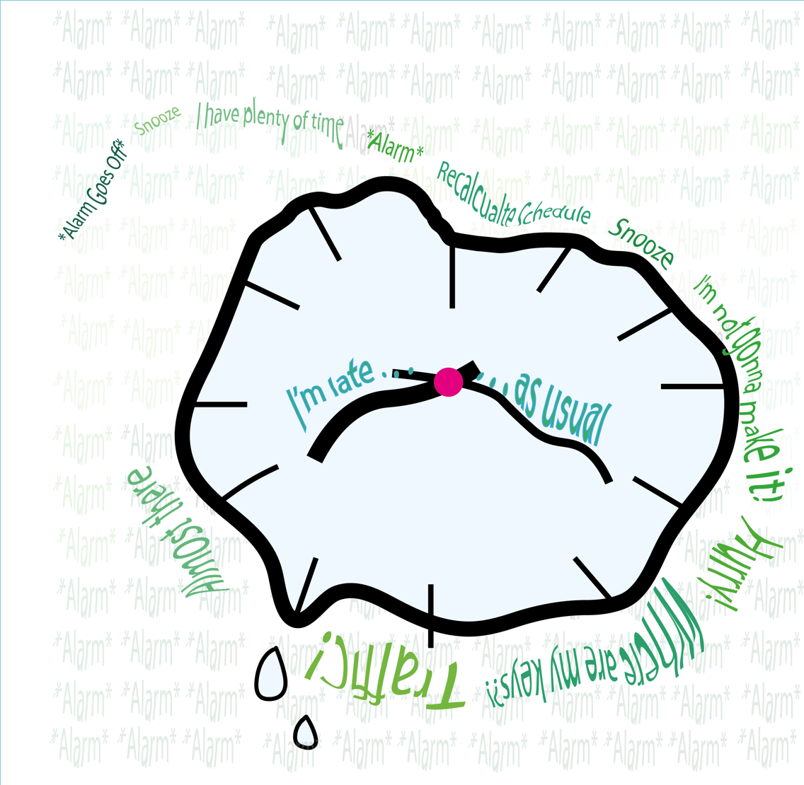
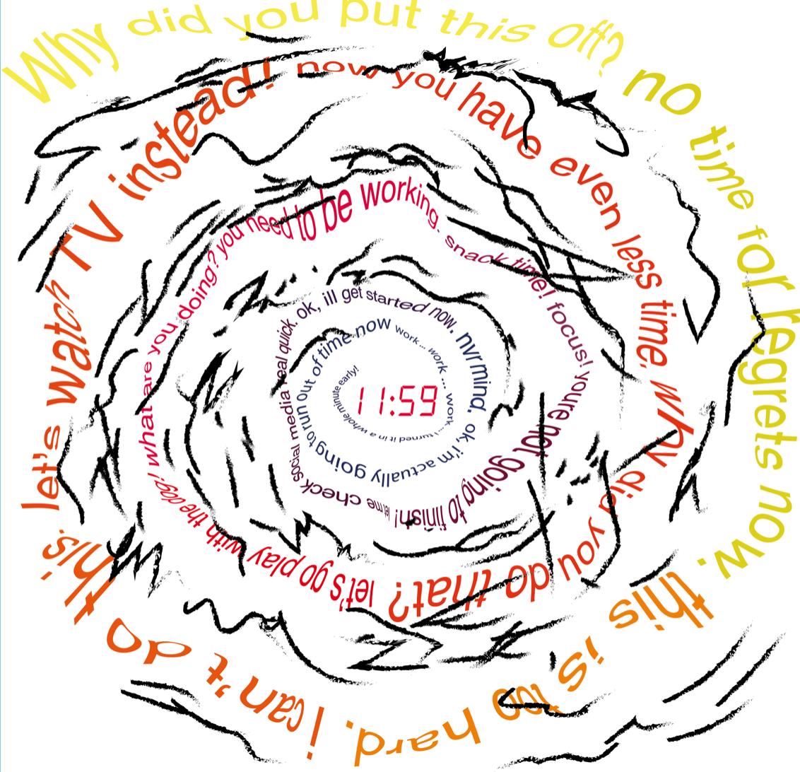
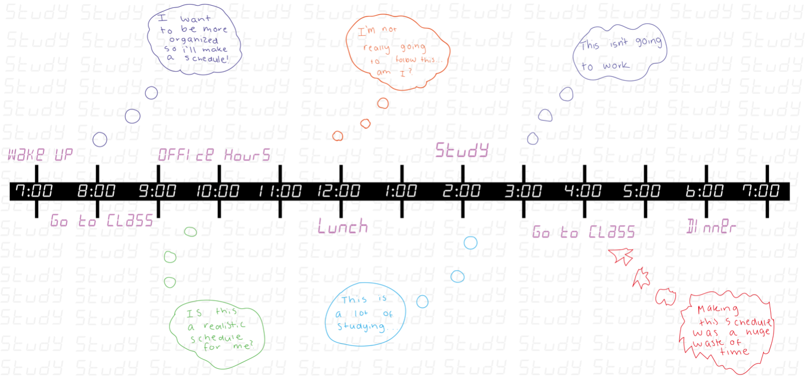

Title: Time Management
 

Artist Statement:
This piece is intended to be a relatable series for people who have ever procrastinated on an assignment before.
On the two lower pieces, they are intended to evoke a panicked feeling as the reader is going around the piece.
I used warm colors on the bottom left corner to continue to evoke a angry, upset feeling. The cooler colors on
the bottom right corner are more relaxed since the story starts when I just woke up, so it relates to grogginess.
Back